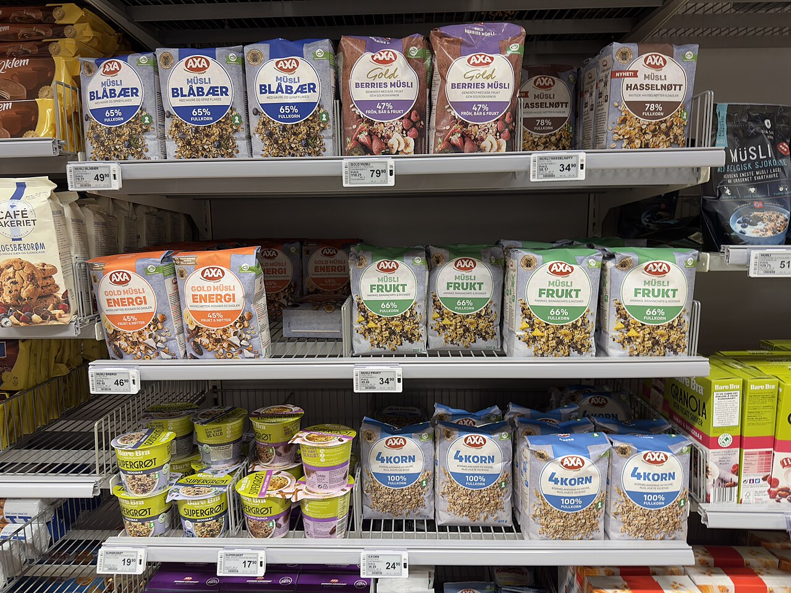

긴급복지 생계비 2026 — 4인 가구 월 199만 4,600원, 실직·질병 다음 달에 신청하는 기준
발행일 2026-10-03

30초 요약
| 항목 | 내용 |
|---|---|
| 누가 | 주소득자 실직·질병·사망, 휴·폐업, 이혼 등으로 소득이 끊기거나 현저히 줄어든 가구. 소득은 기준 중위소득 75% 이하(2026년 1인 월 192만 3,179원, 4인 487만 1,054원) |
| 얼마나 | 생계비 1인 월 783,000원 ~ 4인 1,994,600원(6인 2,636,700원, 7인 이상 1명당 301,000원 추가). 계좌 입금 |
| 언제까지 | 3개월이 원칙이고, 위기가 이어지면 긴급지원심의위원회 심의로 총 6개월까지 늘릴 수 있습니다 |
| 재산 | 일반재산(주거용 공제 후)+금융재산−부채가 대도시 2억 4,100만·중소도시 1억 5,200만·농어촌 1억 3,000만 원 이하, 금융재산은 별도 기준(1인 856만 4,000원~) |
| 순서 | 선지원 후조사 — 129에 신고하고 현장확인을 거치면 지원이 먼저 나갑니다. 소득·재산 기준은 그 뒤 사후조사로 판단합니다 |
1. 누가
긴급복지 생계비는 내 월이 끊긴 저소득 가구를 위한 제도입니다. 자격은 두 겹으로 되어 있습니다. 첫째, 위기 사유가 있어야 합니다. 주소득자의 사망·가출·구금수용, 중한 질병이나 부상, 실직, 휴·폐업, 이혼, 가정폭력, 화재가 대표적입니다. 가족 간호·간병·양육으로 소득활동이 거의 없는 상태, 기초생활보장 수급 중지·미결정, 수도·가스 중단, 사회보험료나 월세 장기체납처럼 지자체 조례로 정한 사유도 들어갑니다.
둘째, 소득·재산 기준입니다. 기준 중위소득 75% 이하여야 하는데, 2026년으로 환산하면 1인 가구 월 192만 3,179원, 2인 314만 9,469원(중위 419만 9,292원), 3인 401만 9,277원, 4인 487만 1,054원 이하입니다. 이 숫자가 애매하다면 일단 신청해 보는 편이 손해가 없습니다. 뒤에서 설명하는 '선지원' 구조 때문입니다. 기준 충족 여부는 지원이 나간 뒤에 사후조사와 적정성 심사로 판단하기 때문입니다.
2. 내용 — 가구원 수별 금액
생계지원금은 기준 중위소득의 40%를 한도로 삼고, 가구원 수에 따라 월 금액이 정해집니다. 2026년 금액표는 이렇습니다.
| 가구원 수 | 월 지원액 | 3개월 총액 | 6개월(연장 상한) |
|---|---|---|---|
| 1인 | 783,000원 | 2,349,000원 | 4,698,000원 |
| 2인 | 1,286,600원 | 3,859,800원 | 7,719,600원 |
| 3인 | 1,644,000원 | 4,932,000원 | 9,864,000원 |
| 4인 | 1,994,600원 | 5,983,800원 | 11,967,600원 |
| 5인 | 2,324,400원 | 6,973,200원 | 13,946,400원 |
| 6인 | 2,636,700원 | 7,910,100원 | 15,820,200원 |
7명 이상은 1명이 늘 때마다 301,000원이 추가됩니다. 4인 가구는 2025년 월 187만 원대에서 2026년 199만 4,600원으로 올랐습니다. 작년 금액으로 계산해 두고 "이 정도밖에 안 나오겠지" 하고 스스로 거르는 일은 없어야 합니다.
받리는 원칙은 계좌 입금이고, 거동이 불편해 현금을 쓰기 곤란하면 같은 금액 상당의 현물로 바뀔 수 있습니다. 생계비 외에 의료비 300만 원 이내(본인부담·비급여), 지역과 가구원 수에 따라 달라지는 주거비, 연료비·전기요금·장제비·해산비가 별도 한도로 겹쳐 나올 수 있습니다.
3. 제외·주의
- 금융재산 기준이 따로 있습니다. 소득·본재산과 별개로, 금융재산은 1인 8,564,000원, 2인 10,199,000원, 3인 11,359,000원, 4인 12,494,000원, 5인 13,556,000원, 6인 14,555,000원 이하(7인 이상 1인당 960,000원 추가)여야 합니다. 통장 잔고가 기준을 넘으면 지원에서 빠질 수 있으니 신청 전에 출금 내역을 정리해 두는 편이 좋습니다.
- 본재산은 지역별로 기준이 다릅니다. 일반재산에서 주거용 재산을 빼주고(대도시 6,900만·중소도시 4,200만·농어촌 3,500만 원까지) 금융재산을 더하고 부채를 뺀 합계가 대도시 2억 4,100만 원, 중소도시 1억 5,200만 원, 농어촌 1억 3,000만 원 이하여야 합니다.
- 3개월이 절대 기한은 아닙니다. 3개월이 원칙이지만 심의를 거쳐 총 6개월까지 연장할 수 있습니다. 3개월이 지나도 형편이 안 나아졌다면 종료 통지만 앉아 있지 말고 연장 심의를 요청하세요.
- 생계비 한도는 기준 중위소득의 40%입니다. 표의 금액은 그 한도 안에서 산정된 값이라, 해마다 고시가 바뀌면 금액도 같이 움직입니다.
- 지원금은 압류 대상이 아니지만, 용도 제한은 있습니다. 긴급지원금과 그 계좌의 채권은 압류할 수 없지만, 생계 유지 말고 다른 용도로 쓰려고 양도하거나 담보로 잡히는 것은 금지되어 있습니다.
4. 서류
긴급지원의 원칙이 '먼저 지원'이기 때문에, 위기상황 확인서·금융정보 제공동의서·임차계약서 같은 서류를 지원이 나간 뒤에 내는 것도 가능합니다. 기본으로 신분증, 통장 사본, 그리고 위기 사유를 보여줄 수 있는 것(퇴직증명서, 진단서·입퇴원 확인서, 폐업사실증명, 이혼 관련 확인서 등)을 챙깁니다. 없는 서류를 채우느라 시간을 쓰기보다 129에 먼저 전화해 뭐가 필수인지 확인하는 편이 빠릅니다.
5. 순서
- 신고 — 보건복지상담센터 129(24시간)에 전화하거나 읍·면·동, 시·군·구청에 직접 신청. 본인이 아니어도 친족이나 이웃의 신고로 시작할 수 있습니다.
- 초기상담·현장확인 — 담당자가 위기상황을 확인하고 현장확인서를 작성합니다.
- 지원 결정·입금 — 결정 통지와 함께 생계비가 계좌로 들어옵니다. 소득·재산 기준 충족 여부는 이 단계에서 막지 않습니다.
- 사후조사 — 지원 결정일부터 1개월 이내 시·군·구청이 전산으로 소득·재산을 대조합니다.
- 적정성 심사 — 긴급지원심의위원회가 적정·연장·종료와(부적정 시) 환수 범위를 결정합니다.
6. 안 될 때
소득이 기준을 살짝 넘는 경우 — 신청 자체를 막는 장벽은 아닙니다. 기준 판단은 사후조사에서 이뤄지니 위기 사유가 분명하면 접수하세요. 실제로 넘었다면 초과분만 반환 대상으로 논의됩니다. 애매하다는 이유로 신청을 놓치는 것이 제일 손해입니다.
금융재산 때문에 걸린 경우 — 통장·예금이 기준이라 현금화되지 않은 자산과는 다릅니다. 어떤 계좌가 잡히는지 129나 담당 부서와 확인해 보시기 바랍니다.
기초생활보장이 더 맞는 경우 — 긴급지원은 최대 6개월짜리 디딤돌입니다. 위기가 길어지면 같은 시·군·구청에서 기초생활보장 생계급여(2026년 선정기준 1인 월 820,556원, 4인 2,078,316원 이하)를 함께 상담해서, 긴급지원이 끝나는 달에 소득이 뚝 끊기지 않게 이어붙이는 편이 안전합니다.
처분이 부당한 경우 — 처분 통지를 받은 날부터 30일 이내 이의신청이 가능합니다.
기준 금액과 지원 한도는 고시 개정에 따라 해마다 바뀝니다. 실제 지원 여부와 금액은 관할 시·군·구청의 현장확인·심의 결과에 따르고, 이 글은 특정 가구의 결과를 보증하지 않습니다.
바로 가기
- 보건복지상담센터 129(국번 없이 · 무료) — 평일 9~18시, 긴급 상담은 24시간
- 복지로 — 긴급복지지원 신청·안내
- 보건복지부 — 긴급복지지원 제도 안내
같이 읽기
- 긴급복지지원 — 생계·의료·주거를 하루 안에 신청하는 법 — 신청 자격과 의료·주거 항목까지 전체 그림을 봅니다
- 긴급복지지원 환수 기준 2026 — 먼저 받고 나서 조사받을 때 돌려막는 금액과 30일 이의신청 — 받은 뒤에 따라오는 사후조사를 미리 봐두는 글
- 긴급복지지원 신청 2026 — 10월 1일부터 동절기 연료비 월 15만원 — 지금 계절에 겹쳐 받을 수 있는 항목
- 청년월세 지원, 9월 선정 발표에 맞춰 지금 할 일 — 월세가 위기 사유로 이어지기 전에 볼 수 있는 제도